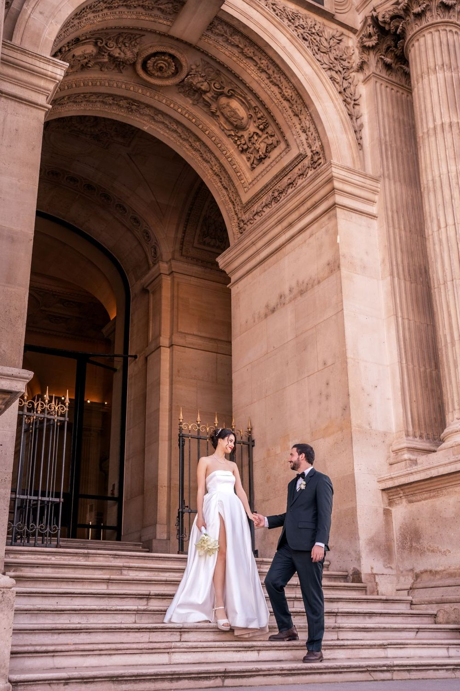
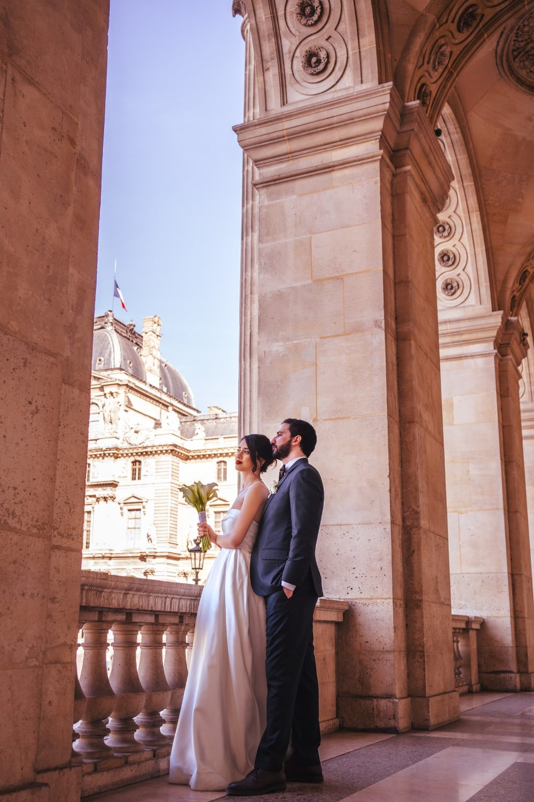
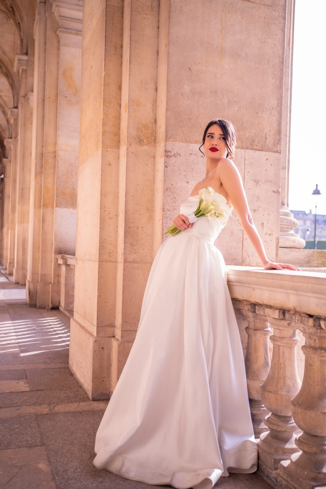
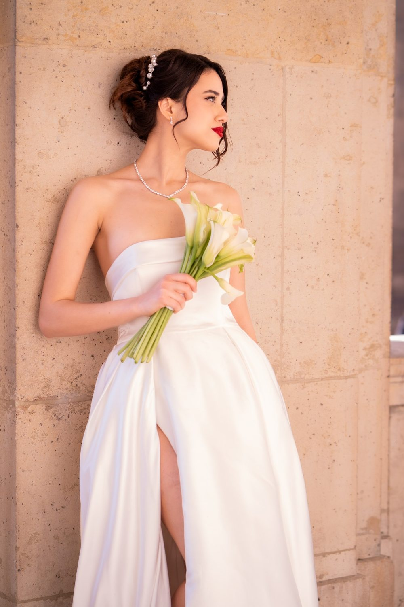

Photographe et vidéaste de mariage à Saint-Ouen-sur-Seine
Un mariage dure une journée et se regarde toute une vie. Nous le photographions et le filmons du premier regard dans le miroir à la dernière danse. Une séance à Saint-Ouen-sur-Seine, c'est aussi la possibilité de varier les ambiances entre Docks de Saint-Ouen et Mairie de Saint-Ouen.

Où faire votre shooting
Le couple photographe et vidéaste réalise votre reportage de mariage à Saint-Ouen-sur-Seine, entre brique, antiquités et bords de Seine. La sortie de la Mairie de Saint-Ouen offre une façade Art déco pour la pluie de pétales et les premières embrassades familiales. Ensuite, les portraits de couple se glissent dans les allées du Marché aux puces, au milieu des miroirs anciens et des fauteuils patinés. Le film se termine au Parc des Docks, où la Seine accompagne une marche lente main dans la main.
Nos lieux pour cette séance
Docks de Saint-Ouen
Anciens docks de brique. Un fond d'architecture pour les portraits des mariés, avec le temps de poser sans presser vos invités.
Mairie de Saint-Ouen
Façade Art déco.
Parc des Docks
Parc contemporain au bord de la Seine. Un décor de verdure pour une séance couple calme entre la cérémonie et le cocktail.
Marché aux puces
Allées d'antiquaires.
Pour que tout se passe bien
Chiné, brut, avec des briques. Les ruelles du marché aux puces sont lumineuses en matinée.
Notre reportage de mariage suit le fil réel de votre journée : préparatifs, cérémonie civile ou laïque, vin d'honneur, dîner, soirée. Nous évitons les poses figées et gardons les gestes qui ne se rejouent pas.
Les allées du Marché aux puces sont lumineuses le matin et plus animées ensuite. Pour des portraits de mariés au calme, placez la séance entre les antiquaires avant la cérémonie, puis gardez la fin de journée pour le Parc des Docks.
À Saint-Ouen-sur-Seine, vous êtes à Métro Garibaldi, Mairie de Saint-Ouen : nous préparons l'itinéraire entre les lieux avec vous.



Avant de nous écrire
Peut-on faire des photos de mariage à la Mairie de Saint-Ouen ?
Oui, la façade Art déco de la Mairie de Saint-Ouen se prête bien aux photos de sortie de mariage civil. Nous vous conseillons de vérifier auprès de la mairie les consignes pour la photo et la vidéo pendant la cérémonie.
Où faire les photos de couple d'un mariage à Saint-Ouen-sur-Seine ?
À Saint-Ouen-sur-Seine, nous proposons aux mariés trois décors proches : les allées d'antiquaires du Marché aux puces, la brique des Docks de Saint-Ouen et les pelouses du Parc des Docks au bord de la Seine.
Comment venir à Saint-Ouen-sur-Seine ?
Métro Garibaldi, Mairie de Saint-Ouen. Nous nous déplaçons avec notre matériel photo et vidéo.
Quel budget prévoir pour un photographe et vidéaste de mariage ?
Le tarif dépend de la durée de couverture, du nombre de lieux et des livrables choisis. Nous établissons un devis personnalisé après avoir échangé sur votre projet.
Parlons de votre mariage
Demander un devisMariage ailleurs en Île-de-France
© Le Couple Photographe · Photographe de mariage Paris & Île-de-France · Mis à jour le 10 octobre 2026
Demander un devis